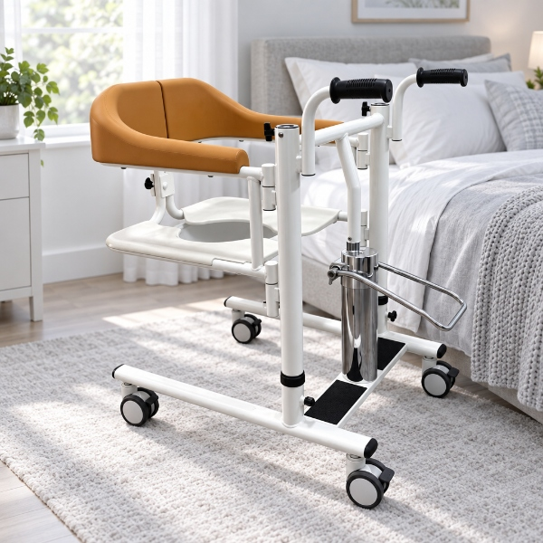
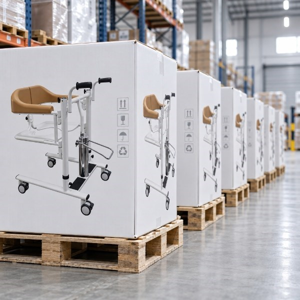

What is DME? A guide to durable medical equipment and Medicare coverage
DME — durable medical equipment — is the category that patient lift transfer chairs, wheelchairs, and hospital beds all fall under. If you are sourcing patient lift transfer chairs for the US market, understanding what DME is, how it is classified, and how Medicare pays for it is the difference between selling a product and selling into a reimbursement system.
What's in this guide
- What DME (durable medical equipment) actually means — and the 5-part definition CMS uses
- Where patient lift transfer chairs fit — HCPCS codes E0630 and E0635
- How Medicare covers and reimburses DME through suppliers
- Why the DME classification matters for anyone buying or selling patient lift transfer chairs
DME stands for durable medical equipment. In the US healthcare system, it is a specific, regulated category — not a marketing term. A patient lift transfer chair is DME. A wheelchair is DME. A hospital bed is DME. A box of bandages is not. The distinction matters because DME is reimbursed by Medicare and private insurance under a defined set of rules, and those rules determine how the equipment gets to the patient, who pays, and who supplies it.
What is durable medical equipment?
The Centers for Medicare & Medicaid Services (CMS) — the agency that runs Medicare — uses a five-part test to decide whether an item qualifies as DME. An item is DME if it meets all five:
- It can withstand repeated use. DME is built to be used again and again — unlike a disposable supply, it is not single-use.
- It serves a medical purpose. The primary function is medical, not comfort or convenience.
- It is not useful to someone without an illness or injury. A healthy person has no use for a patient lift transfer chair; a healthy person can use a regular chair.
- It is appropriate for use in the home. DME is designed to be used where the patient lives, not only in a hospital.
- It has an expected life of at least three years. DME is an investment, not a consumable.
A patient lift transfer chair passes all five without argument: it is a steel-frame device used dozens of times a day, it exists to move a person who cannot move themselves, it is useless to an able-bodied person, it is used in home care every day, and a well-built one lasts 5 to 7 years. That is DME.
Where patient lift transfer chairs fit: HCPCS codes E0630 and E0635
In the US, every reimbursable medical item has a HCPCS code — the billing code that identifies it to Medicare and insurers. A manual or hydraulic patient lift transfer chair bills under E0630; an electric one bills under E0635. CMS describes E0630 as:
"patient lift transfer chair, hydraulic or mechanical, includes any seat, sling, strap(s) or pad(s)."
That code is the reason a supplier can bill Medicare for a patient lift transfer chair. If you are selling patient lift transfer chairs into the US, the E0630 or E0635 code is how your product enters the reimbursement system. A buyer who runs a DME business is not just buying a piece of equipment — they are buying a product they can bill under E0630. That is why FDA listing and the correct HCPCS code matter together: one makes the product legal to sell, the other makes it reimbursable.
How Medicare covers DME
Medicare Part B covers DME when a few conditions are met. The flow looks like this:
- A doctor prescribes it. The patient's physician writes an order and documents medical necessity. Without this, Medicare will not pay.
- A Medicare-enrolled DME supplier provides it. The patient gets the equipment from a supplier that is enrolled with Medicare — not from any retailer.
- The supplier submits a claim. The supplier bills Medicare under the correct HCPCS code: E0630 for manual or hydraulic models, E0635 for electric.
- Medicare pays its share. After the Part B deductible, Medicare generally pays 80% of the approved amount, and the beneficiary pays the remaining 20%.
The important thing to understand if you are selling into this market: the supplier is the one who buys the equipment and the one who bills Medicare. The patient does not typically buy a patient lift transfer chair out of pocket. That is why the customer for a patient lift transfer chair manufacturer is the DME supplier — the company that has the patients, the prescriptions, and the billing relationship with Medicare.

Why the DME classification matters for buyers
If you are a procurement manager, a DME distributor, or a care-facility operator sourcing patient lift transfer chairs, the DME classification changes what you should care about:
- Compliance. The product must be FDA registered and match its HCPCS code. A supplier cannot bill E0630 for a product that does not actually meet the definition.
- Durability. DME is defined by its 3-year-plus expected life. A cheap frame that fails in 18 months is not just a bad purchase — it is a reimbursement and liability problem.
- Documentation. Suppliers need the FDA registration number, device listing, and Instructions for Use to stay compliant and to respond to audits. If a manufacturer cannot produce these, the supplier is exposed.
- Reimbursement economics. Medicare sets an approved amount for each code. A supplier's margin is the difference between what they pay the manufacturer and what Medicare allows. That is why factory-direct pricing matters so much in this market.

FAQ
What does DME stand for?
DME stands for durable medical equipment. It is a category of medical devices that can withstand repeated use, serve a medical purpose, and are appropriate for use in the home — such as patient lift transfer chairs, wheelchairs, hospital beds, and oxygen equipment.
What qualifies as durable medical equipment?
Under CMS guidance, an item qualifies as DME if it can withstand repeated use, is primarily used for a medical purpose, is not generally useful to someone without an illness or injury, is appropriate for use in the home, and has an expected life of at least three years.
Is a patient lift transfer chair considered DME?
Yes. A patient lift transfer chair is classified as durable medical equipment under HCPCS codes E0630 (manual and hydraulic) and E0635 (electric). Medicare covers patient lift transfer chairs for beneficiaries who have a medical need and a doctor's prescription, reimbursed through a Medicare-enrolled DME supplier.
How does Medicare cover DME?
Medicare Part B covers DME when a doctor prescribes it and documents medical necessity. The beneficiary gets the equipment from a Medicare-enrolled DME supplier, and the supplier submits a claim to Medicare for reimbursement. Medicare pays 80% of the approved amount after the Part B deductible; the beneficiary typically pays the remaining 20%.
What is the difference between DME and disposable medical supplies?
DME is durable — built to withstand repeated use with an expected life of at least three years, like a patient lift transfer chair or hospital bed. Disposable supplies are single-use or short-term, like bandages, catheters, or oxygen tubing. DME is reimbursed under Medicare Part B as equipment; supplies are billed differently.
Sourcing patient lift transfer chairs for the US market?
We manufacture FDA registered patient lift transfer chairs (HCPCS E0630 for manual and hydraulic, E0635 for electric), 150 kg capacity. We provide the registration number, device listing, and English IFU with every order. Send us your requirements for a factory-direct quote.
Get a QuoteKeep reading on DME and patient handling
- DME explained: what durable medical equipment is, who buys it, and how it gets paid for — the sector hub.
- DME benefit management explained — medical necessity, coding, rental rules, and why claims get denied.
- How to start a DME business — accreditation, licensure, payer enrolment, and sourcing.
- complete buying and specification guide — drive types, weight capacity, installation, accessories, sourcing.
- How to assemble and install a patient lift transfer chair — tools, sequence, and the post-install safety checklist.
- Accessories and add-ons explained — commode pans, armrest pads, batteries, and OEM options.
- Compact models for narrow doorways — base widths under 30 inches at the same 150 kg rating.
- View our factory-direct patient lift transfer chair product line — FDA registered, 150 kg rated, 35-day lead time.
This article is for general information and is not legal or billing advice. Medicare coverage rules and reimbursement amounts change; always confirm current CMS guidance and consult your billing or compliance team for specific decisions.